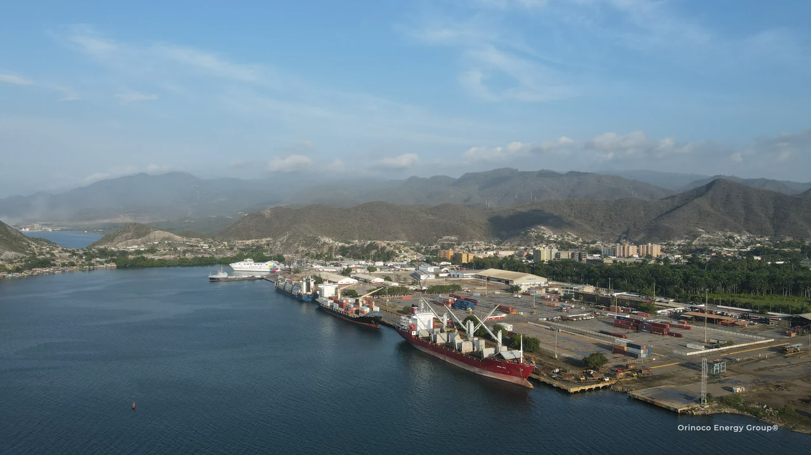

Conexiones internacionales
LOGÍSTICA INDUSTRIAL.
EN TODA VENEZUELA.
Suministro internacional y logística para proyectos industriales en toda Venezuela, con amplia experiencia en el Orinoco.
Houston → Cartagena → Guanta → Orinoco
Busca otra ciudad, puerto o país
SUMINISTRO INTERNACIONAL · VENEZUELA · COMERCIO MUNDIAL
Conectados con el mundo. Con raíces en el Orinoco.
Explora puertos, destinos terrestres y orígenes de suministro. Selecciona un lugar para ver su conexión con el proyecto.
El mapa ilustra corredores logísticos. El servicio marítimo, los puertos de transbordo y la ruta final se confirman para cada embarque.
El proyecto define la ruta
EL PUERTO ADECUADO.
DEL PROVEEDOR AL DESTINO.
Coordinamos procura y carga desde Houston y otros orígenes en Estados Unidos, Latinoamérica, Europa y Asia. La carga, el destino de entrega y la fecha requerida guían la selección de la ruta.
Guanta es una puerta de entrada clave para el oriente venezolano, incluidos Maturín y el Orinoco. También planificamos entregas a través de Maracaibo, Puerto Cabello, La Guaira y otros puertos adecuados del país.
Importaciones y exportaciones siguen el mismo criterio: coordinar proveedor, transporte internacional, aduanas y entrega. El puerto es una etapa del recorrido hasta el destino del cliente.
Para equipos industriales, comparamos los puertos según capacidad de manejo, acceso del buque, aceptación de la carga y recorrido terrestre. La decisión considera el costo total y el tiempo de entrega desde el origen hasta el destino.
Planifica tu origen y destino
Servicios regulares
El servicio adecuado para la carga.
Comparamos salidas, disponibilidad de equipos y opciones de transbordo según la carga y la fecha de entrega. La recogida, las aduanas y el transporte final forman parte del alcance acordado.
Explora el transporte marítimoEscalas según carga y fletamentos
Una solución para cada embarque.
Para carga sobredimensionada o de gran volumen, evaluamos el buque y la escala adecuados, así como fletamentos parciales o completos. El plan depende de la carga, el izaje, el calado, la aceptación del terminal y la ruta terrestre.
Consulta la ruta de tu proyectoTu próximo proyecto
VAMOS A
HACERLO AVANZAR.
Cuéntanos qué necesitas trasladar, desde dónde y hacia qué destino.
Conversemos sobre tu proyecto